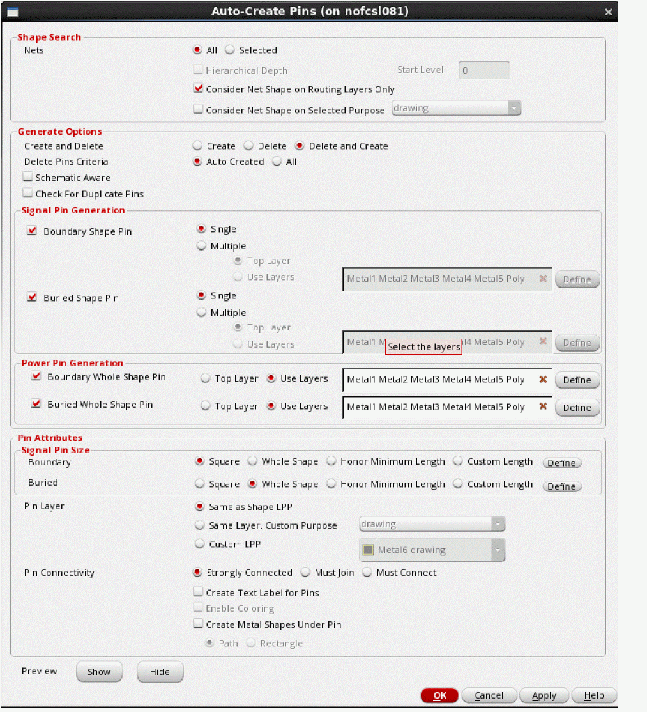
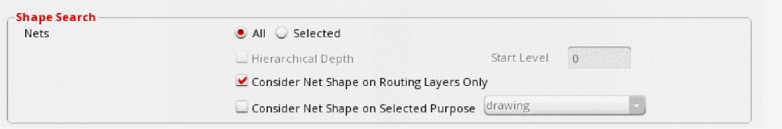
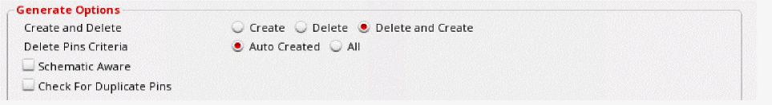
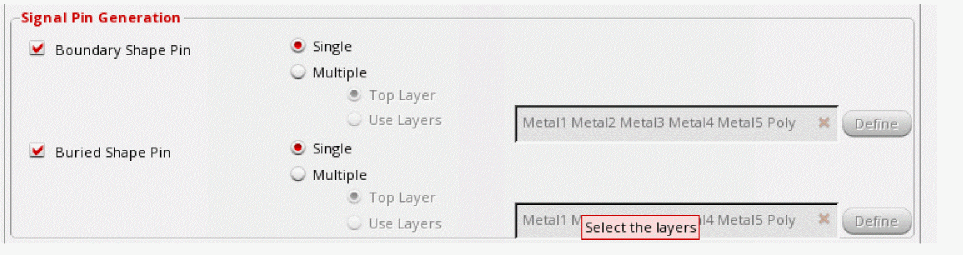
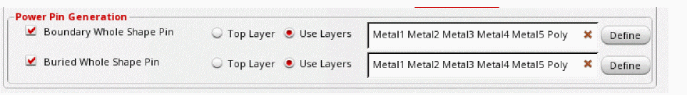
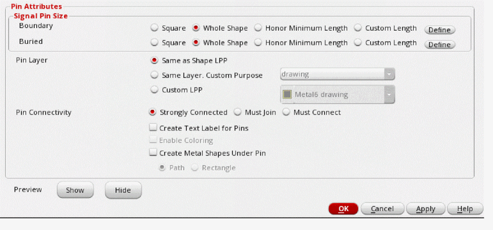
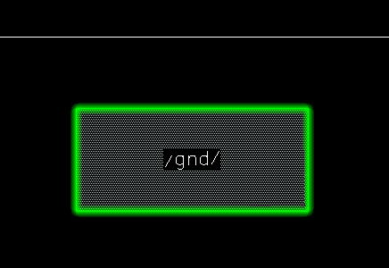

Creating Pins Automatically in the Pin Tool
The Auto-Create Pins form provides options to search for net shapes in a design and create boundary and buried pins automatically on these net shapes.

By default, pins are created as groups. Set boundarySquareShapePin to
t to create figGroups instead.- Open the Auto-Create form using one of the following methods:
-
In the Shape Search section, select All or Selected to specify the location in which the net shapes are to be searched.
- (Virtuoso Layout Suite EXL) Select Hierarchical Depth to enable hierarchical pin creation and pin promotion from a lower level to the top level.
- Select Consider Net Shape on Routing Layers Only to restrict the search for net shapes to the routing layers.
- Select Consider Net Shape on Selected Purpose and select a purpose.
-
In the Generate Options section, select Create and Delete to delete all pins that were created by the Auto-Create Pins tool, create pins hierarchically, and promote them from a lower level to a higher level.
- Select Delete Pin Criteria to delete existing pins in the layout canvas before generating new ones to avoid creating duplicate pins.
- Select Schematic Aware to check for the presence of matching terminals in the corresponding schematic net geometries before creating pins.
- Select Check for Duplicate Pins to check for any similar pins in the design. If a similar pin is found, a duplicate pin is not created.
-
Set Signal Pin Generation to either one or both options: Boundary Shape Pin and Buried Whole Shape Pin.
 -
In the Power Pin Generation section, specify the type of whole shape pins to be created - boundary, buried or both.
 -
In the Pin Attributes section, you can provides attributes for the new pins to be generated.
 -
In Signal Pin Size section, you can set the pin size for Boundary and Buried pin shapes to Auto, Whole Shape, Honor Min Length, or Custom Length and create square pins or custom sized pins as per underlying shape or
minLengthconstraint. Consider two scenarios where initial pin length is specified and the custom length is modified.Custom Length Pin Resize Output Example Custom length is auto-corrected to the minimum length by default in the Layer Custom Length table.
- In Pin Layer, specify the layer on which pins are to be generated. The available options are: Same as Shape LPP, Same Layer, Custom Purpose, and Custom LPP.
- Set Pin Connectivity to one the pin connectivity models for the pins that are generated. The available options are: Strongly Connected, Must join, and Must Connect.
- Select Create Text Label for Pins to create text labels for the pins that are generated. Label texts are derived from their terminal names.
- Select Enable Coloring to use the multiple patterning color engine to assign colors to the new pins based on their positions relative to the WSP tracks.
- Select Create Metal Shapes Under Pin to create a metal shape under each auto-created level-1 (soft block) pin.
- Click Show to see a preview of how the settings would be applied to the design. Click Hide to close the preview.
- Click Apply to generate pins in the layout canvas. Click OK to create pins and close the form.
Pins are automatically generated in the layout canvas. Their placement status is set to Placed.
The following image shows a power buried (whole shape) pin generated by the Auto-Create Pins tool.

Related Topics
Pin Shapes Created for Straddling Shapes in Auto Create Pins Form
Hierarchical Pin Creation using the Pin Tool
Return to top